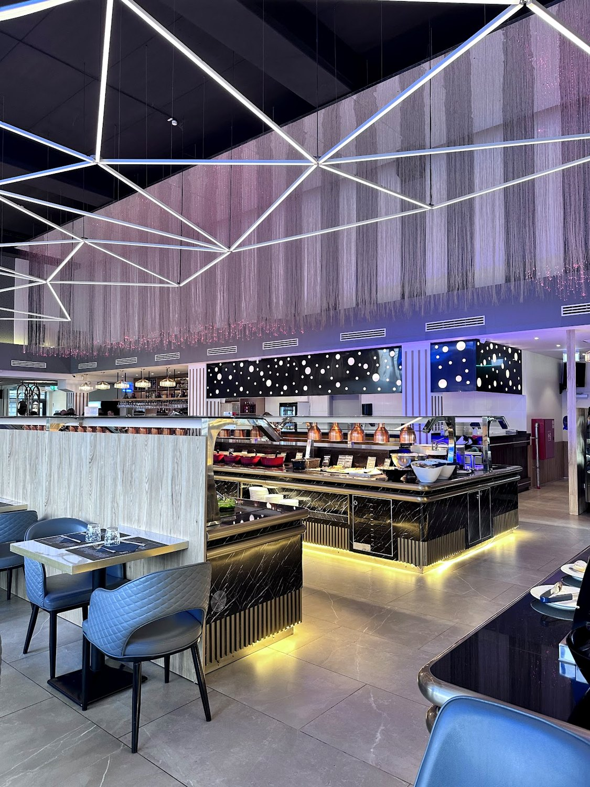
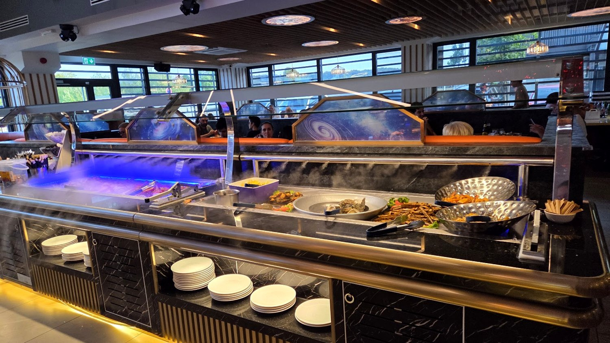
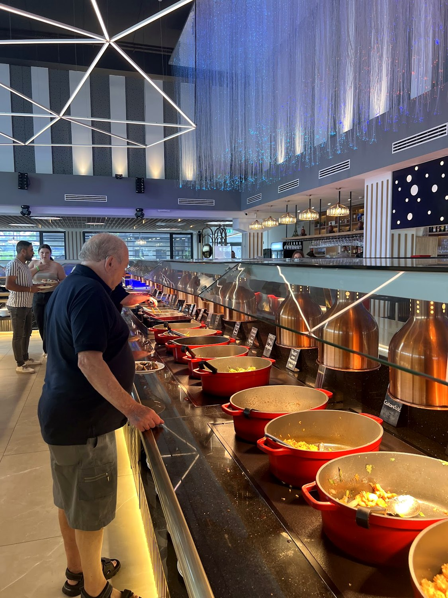
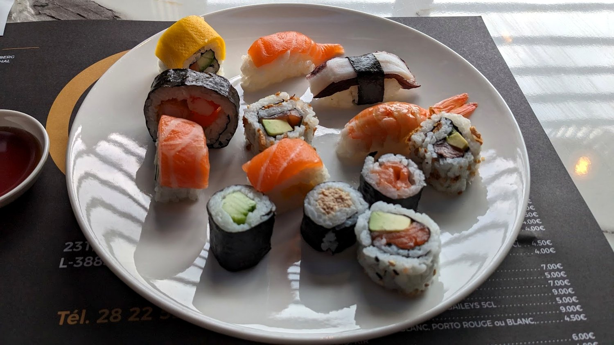
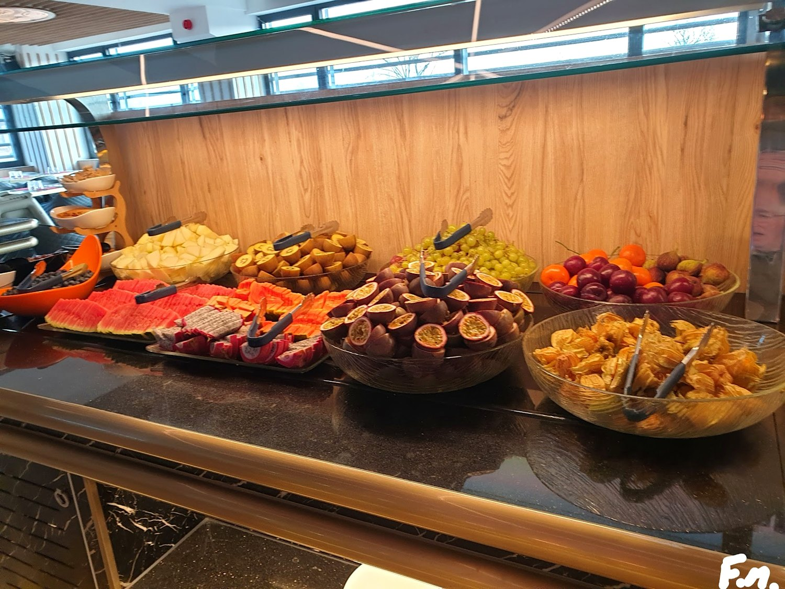
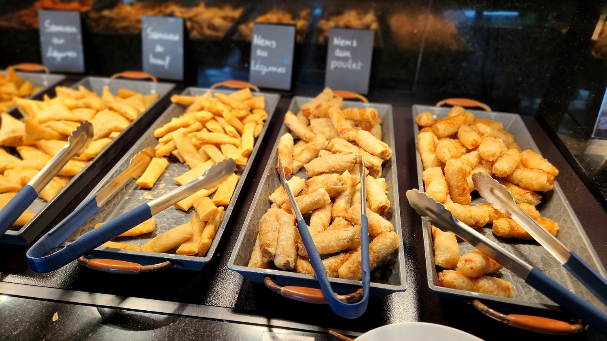
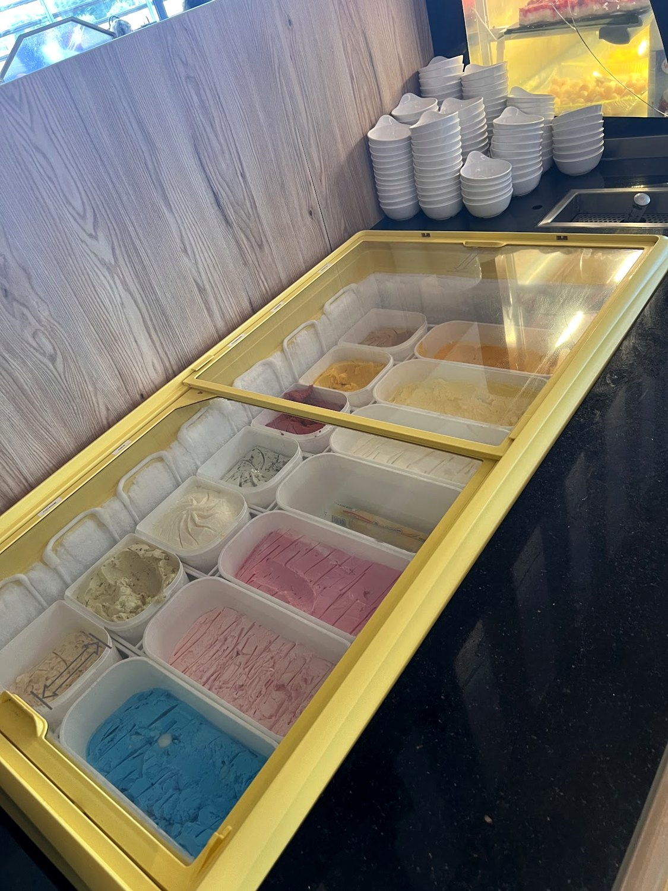
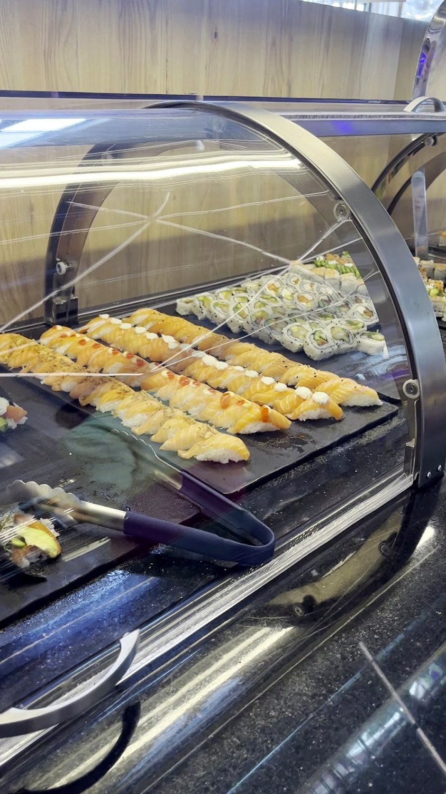
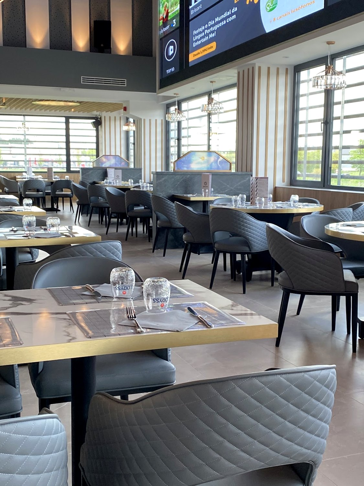

Grand Buffet
Sushis, grillades, wok et desserts — le buffet à volonté, midi et soir. On tourne la table, et on se ressert.
À volonté,tout simplement.
Un grand buffet chaud et froid : sushis roulés sur place, grillades, wok, plats mijotés, salades, et un coin desserts & glaces.
On choisit, on goûte à tout, on revient. C'est l'idée de la maison : la variété et la générosité, à un seul prix. Idéal en famille ou entre collègues, le midi comme le soir.

À volontéIl y en a pour tout le monde
Sushis, grillades, wok, plats du jour et un grand choix de desserts et de glaces — chaud et froid, à volonté.






Grande,lumineuse.
Une salle moderne et spacieuse, tout en lumière — de la place pour les familles, les groupes et les repas d'équipe. Un bar pour l'apéritif, et de quoi se garer juste devant.

Les stations du buffet
Un aperçu de ce qui vous attend au buffet — l'offre varie chaque jour.
Sushi & froid
Le chaud
Desserts & glaces
Les formules
Stations d'après les photos publiques de la maison, à titre indicatif — l'offre change selon les jours. Formules à volonté midi & soir : tarifs à confirmer sur place.
Nous trouver
Adresse exacte à confirmer
Ouvert midi & soir · horaires à confirmer